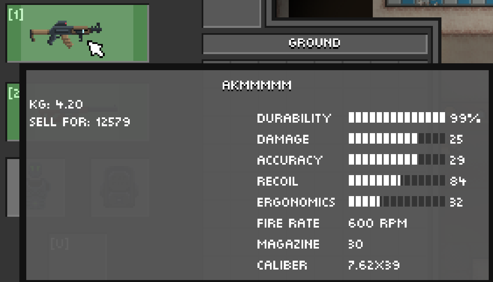
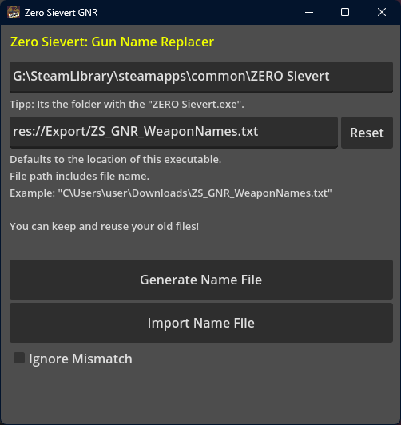
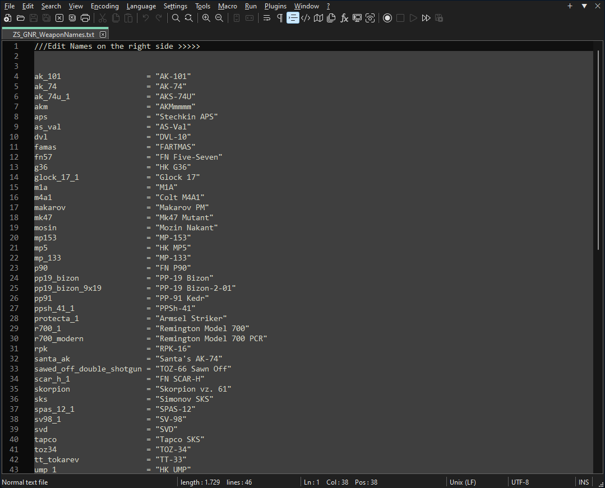

Standalone modding software for the video game ZERO Sievert by CABO Studio.It replaces the Display names of the weapons in the game in a non-destructive way.

In game weapon showing changed name.
For a tutorial how to use it, read the Itch.io page.

Interface window.

Generated text file with gun names.